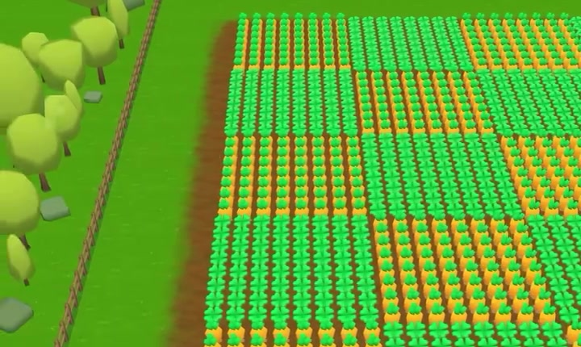
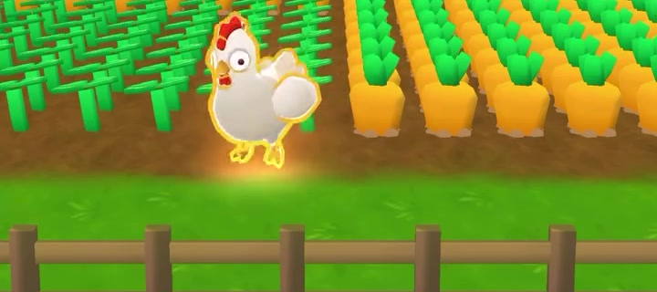

Live on Poki
Harvest Loop
A farming-machine simulation: harvest crops, sell them, upgrade your machine and roll into bigger fields.
- Studio
- Kreativitas
- Genre
- Simulation · Idle
- Rating
- 4.3 / 5 · 4,300 votes
- Players
- 1M+ in the first week
What I did
- Environment art
- Props
- VFX
- UI
- Skins
- Optimization


